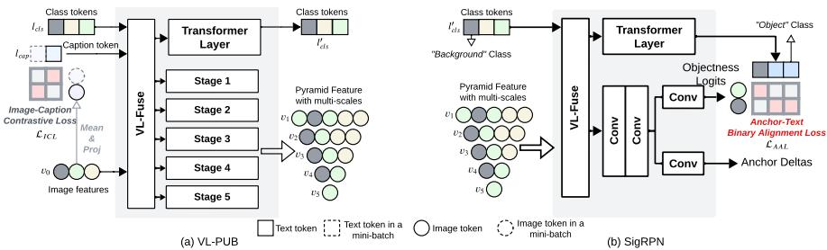
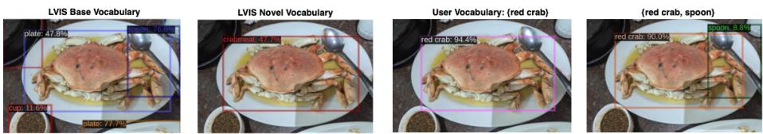
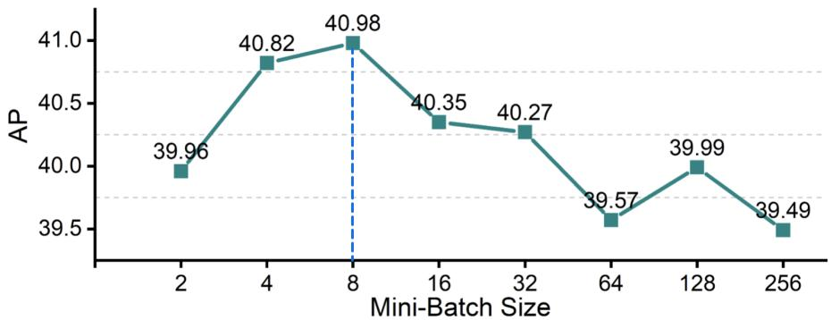
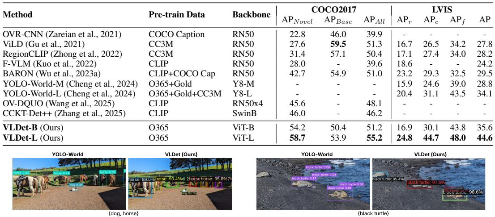

📄 ENHANCING OPEN-VOCABULARY OBJECT DE-TECTION THROUGH MULTI-LEVEL FINE-GRAINED VISUAL-LANGUAGE ALIGNMENT¶
VLDet：迈向开放世界：多粒度视觉语言对齐的高效开放词汇目标检测分析¶
概要（TL;DR）¶
- 核心问题：传统目标检测无法识别新类别，而现有开放词汇方法在适配强大的视觉语言模型（如CLIP）时，面临特征不匹配（单尺度 vs 多尺度）和高昂计算成本（依赖海量伪标签）的矛盾。
- 核心方案：提出一个系统性解决方案：1) VL-PUB模块，轻量地将CLIP单尺度特征适配为多尺度特征金字塔；2) 三明治式对齐损失，协同利用图像级、区域级和锚点级监督；3) SigRPN，将区域提案网络改造为开放词汇的物体发现器。
- 关键结果：在标准基准（COCO, LVIS）上取得显著突破，尤其在未见过的类别上性能大幅提升（如COCO上达到58.7 AP），且训练仅需高质量检测数据和生成标题，避免了复杂伪标签流程。
- 主要挑战：论文报告的SOTA结果非常突出，但可复现性面临高风险：官方代码和模型未开源，训练计算需求极高（64块A100），且缺少统计显著性分析。
📚 研究背景与动机¶
目标检测是计算机视觉的核心任务，但传统方法（如Faster R-CNN、YOLO）受限于训练时的固定类别集合，无法应对开放世界中层出不穷的新物体。
随着CLIP等视觉-语言模型（VLM）的出现，研究者开始探索开放词汇目标检测（OVD），旨在让检测器能够根据任意文本描述（如“水豚”）来定位物体。然而，这篇论文洞察到一个更深层的根本矛盾：如何将主要为图像级分类设计的、拥有强大语义但空间信息较弱的CLIP特征，高效且无损地适配到需要密集、多尺度空间预测的目标检测任务中。
现有方法在处理这一矛盾时存在明显局限： 1. 特征金字塔缺失：要么直接使用CLIP的单尺度特征，损害多尺度检测能力；要么从零开始重训练多尺度主干，依赖海量噪声伪标签，计算成本高、流程复杂。 2. 对齐策略偏颇：要么只关注图像级对齐，缺失区域判别力；要么只关注区域级对齐，丢失了图像级上下文信息。 3. 提案网络封闭：传统的区域提案网络（RPN）在已知类别上训练，对全新类别物体不敏感，可能在新物体检测的源头就将其误判为背景。
因此，本文的核心任务是：在不牺牲CLIP强大语义能力、不引入巨大开销的前提下，获得适合检测的多尺度特征，并设计一种能协同利用全局与局部信息、且能从源头发现新物体的对齐机制。
🔬 方法详解¶
本文提出了一套端到端的架构，其核心在于视觉语言金字塔上采样块（VL-PUB）、基于Sigmoid的视觉语言区域建议网络（SigRPN） 和多级细粒度对齐损失的协同。

此图清晰地展示了VLDet的核心架构，包括图像级对比损失的计算位置、VL-PUB生成多尺度特征金字塔的过程，以及SigRPN进行细粒度锚点-文本对齐的机制，是理解方法设计的关键。
1. VL-PUB：高效的特征适配器¶
VL-PUB模块旨在解决CLIP单尺度特征与检测多尺度需求的不匹配。其关键创新是双向交叉注意力机制：
$$
\begin{aligned}
A_{V→L} &= \text{Softmax}\left(\frac{(VW_QV)(LW_KL)T}{\sqrt{d_k}}\right)(LW_VL) \quad &\text{(视觉→语言)} \
A_{L→V} &= \text{Softmax}\left(\frac{(LW_QL)(VW_KV)T}{\sqrt{d_k}}\right)(VW_VV) \quad &\text{(语言→视觉)} \
V' &= [A_{V→L}; A_{L→V}]W^O + V \quad &\text{(融合与残差)}
\end{aligned}
$$
- 物理直觉：V→L注意力让每个像素点查询与之最相关的文本概念（例如，猫耳像素关联“猫”和“三角形”）；L→V注意力让每个文本标记定位到相关的图像区域（例如，“猫”这个词激活所有猫的像素）。双向设计确保了细粒度的像素-词汇对应。
- 工作流程：VL-PUB从CLIP提取的最深层、高语义特征开始，通过多次与语言特征进行双向交叉注意力并上采样，逐步构建出一个完整的视觉语言特征金字塔，廉价地获得了检测所需的多尺度空间特征。
2. SigRPN：开放词汇的物体发现器¶
为了从源头提升新类别物体的发现能力，论文改造了传统RPN，提出SigRPN。其核心是基于Sigmoid的锚点-文本对比损失： $$ \mathcal{L}{\text{AAL}} = -\frac{1}{N}\sum{i=1}^N \left[y_i\log\sigma(s_i) + (1-y_i)\log(1-\sigma(s_i))\right] $$ 其中，\(s_i = \text{sim}(a_i, t)/\tau\)是锚点特征\(a_i\)与文本特征\(t\)的相似度，\(\sigma\)是sigmoid函数，\(y_i\)是二元标签（是否匹配）。 - 物理直觉：该损失让每个锚点独立地判断其与文本描述的匹配概率，相当于训练RPN成为一个“开放词汇的物体/背景分类器”。温度系数\(\tau\)控制判断的置信度。 - 优势：避免了传统对比学习中的复杂负样本采样，处理密集锚点时更高效，且直接面向开放词汇设定进行优化。
3. 多级细粒度对齐损失：三明治监督¶
论文创新性地提出了一个三层次的对齐监督框架，构成性能提升的引擎： - 顶层（图像级）：\(\mathcal{L}_{\text{ICL}}\)，在VL-PUB之前计算图像与文本标题的对比损失，恢复全局上下文理解。 - 中层（区域级）：由检测头（如Fast R-CNN）实现的标准区域-分类损失，确保每个提案框的精准分类。 - 底层（锚点级）：\(\mathcal{L}_{\text{AAL}}\)，即上述SigRPN的损失，在最底层实现细粒度的开放词汇物体发现。
总对齐损失为各级损失的加权和：\(\mathcal{L}_{\text{align}} = \lambda_{\text{img}} \mathcal{L}_{\text{ICL}} + \lambda_{\text{reg}} \mathcal{L}_{\text{region}} + \lambda_{\text{anchor}} \mathcal{L}_{\text{AAL}}\)。这种“三明治”结构确保了从全局场景到局部细节的协同对齐。
📊 实验验证¶
论文在COCO和LVIS两个标准OVD基准上进行了全面评估，并与当前主流方法进行了对比。
突破性的性能表现¶

此图直观展示了VLDet强大的开放词汇检测能力，能够准确检测从标准数据集中到用户自定义（如“黑色乌龟”）的各类物体，为论文宣称的高性能提供了视觉佐证。
- COCO数据集：在17个未见过的（Novel）类别上，VLDet达到了58.7%的AP，相比之前最佳方法（46.0% AP）实现了12.7个绝对百分点的巨大提升（相对提升27.6%）。这是一个标志性的突破。
- LVIS数据集：在包含337个稀有类别的更具挑战性设定下，VLDet-L达到了24.8% AP，也超越了此前最佳方法。
- 关键优势：这些SOTA结果是在仅使用Objects365检测数据集及其生成标题进行预训练的情况下取得的。而许多对比基线使用了更大、更复杂的数据集（如CC3M、GoldG），这使得VLDet的结果更具说服力，证明了其方法的高效性。
消融研究验证核心设计¶
消融实验系统性地验证了每个组件的必要性：
- 多级对齐损失：在LVIS上的实验表明，添加图像级损失(\(\mathcal{L}_{\text{ICL}}\))和锚点级损失(\(\mathcal{L}_{\text{AAL}}\))能持续提升稀有类别的检测精度（APr从12.43提升至16.93）。
- VL-PUB与训练策略：在COCO闭集检测上验证了：1) 使用预训练CLIP编码器的重要性；2) VL-PUB带来的多尺度特征优于单尺度；3) 引入图像标题和\(\mathcal{L}_{\text{ICL}}\)损失带来明确增益。
- 图像级损失批次大小：

此图通过实验表明图像级对比损失在批次大小为8时达到最佳效果，为超参数选择提供了实证依据，增强了方法的严谨性。
复现性审计与潜在问题¶
尽管结果出色，但独立复现面临挑战： - 高风险：官方代码、模型权重和生成的标题数据均未提供，这是最大的复现障碍。 - 高成本：训练需要64块NVIDIA A100 GPU，门槛极高。 - 统计严谨性：所有惊艳的SOTA结果均为单次运行值，未报告多次运行的标准差以评估稳定性。 - 效率对比不全面：虽然计算量（GFLOPs）低于部分基线，但未提供与YOLO-World等高效模型在推理速度（FPS）上的直接对比。

此图提供了VLDet与先前SOTA方法YOLO-World的直观检测效果对比，显示了VLDet在定位准确性（如对“黑色乌龟”的检测）上的优势，是性能声称的直观支撑。
💡 核心要点¶
- 根本矛盾与系统性解决：论文精准识别了将图像级VLM适配到密集检测任务时的“特征不匹配”与“对齐鸿沟”矛盾，并提出了一个涵盖特征适配、多级对齐和开放提案的系统性解决方案。
- 鱼与熊掌兼得：通过轻量的VL-PUB模块，实现了在不损失CLIP语义能力的前提下，低成本获得检测所需的多尺度特征；通过三明治对齐损失，协同利用了不同粒度的监督信号。
- 源头创新：SigRPN将传统封闭式RPN改造为开放词汇物体发现器，从检测流程的第一步就增强了对新类别的敏感性，是性能提升的关键之一。
- 高效数据策略：方法仅需在高质量检测数据及生成标题上训练，避免了依赖海量噪声伪标签的复杂流程，更具可操作性和可复现性潜力。
- 卓越但需验证的性能：报告的指标提升显著，若经得起复现检验，将是OVD领域的重大进展。但目前受限于可复现性风险，需谨慎看待。
🔮 未来方向与局限性¶
- 局限性：当前方法最大的局限在于可复现性门槛。高昂的计算需求与未开源的实现细节，阻碍了社区的验证与进一步发展。此外，方法框架仍基于两阶段检测器，在推理速度上可能不及一些单阶段模型。
- 未来方向：
- 轻量化与效率提升：探索更轻量的VL-PUB设计，或将框架适配到单阶段检测器，以提升推理速度。
- 更强的基础模型：将当前框架与更强大的VLM（如大型多模态模型）结合，探索性能极限。
- 更复杂的开放世界理解：超越简单的类别检测，迈向开放词汇的场景图生成、视觉推理等需要更细粒度对齐的任务。
- 推动开源：当务之急是作者开源代码、模型及数据，以接受社区检验，推动该方向实质性的进步。